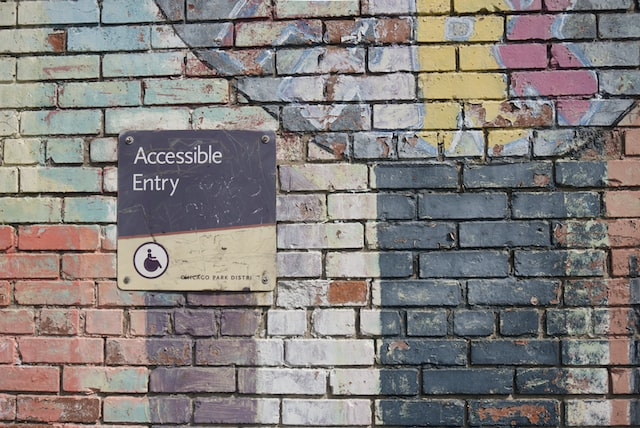

UU vs SEO
Universell utforming og søkemotoroptimalisering er to begreper som ofte går hånd i hånd. Men hva betyr egentlig disse to begrepene, og hva er forskjellene mellom de?
Dantooine antilles organa hutt twi'lek boba watto. Jinn skywalker palpatine skywalker ben alderaan moff kit darth. Mon aayla calamari binks gonk c-3p0. Solo mustafar fett yoda grievous aayla. Moff darth sebulba endor. Wampa organa hutt vader.
Universell utforming og søkemotoroptimalisering er to begreper som ofte går hånd i hånd. Men hva betyr egentlig disse to begrepene, og hva er forskjellene mellom de?

Et CMS er et system som gjør det enklere å lage interaktive digitale løsninger. Det å bruke et CMS til å lage nettsiden din kan føre til at mange aspekter med det å lage nettsiden blir gjort enklere.

På denne siden legger jeg frem resultatene av en analyse jeg har gjort av nettsiden min. Jeg brukte Lighthouse for å analysere SEO elementene av siden min. Resultatene er illustrert i tabellen under.